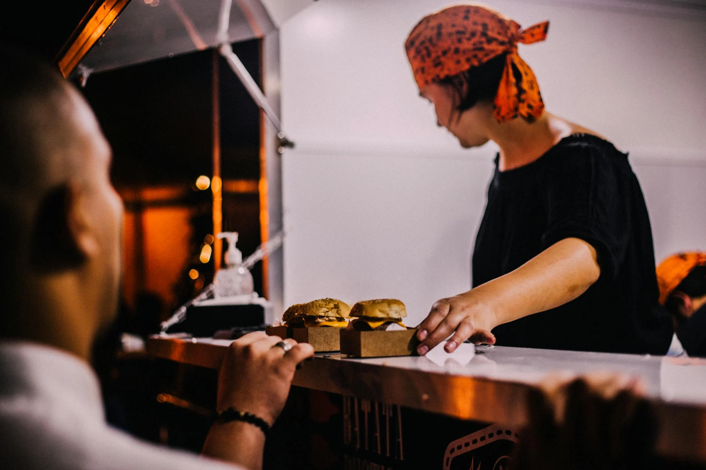
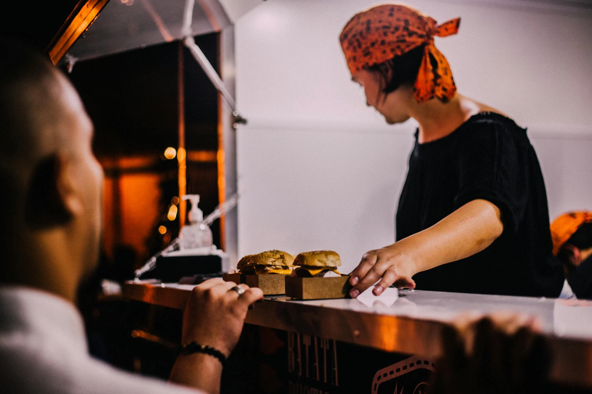

Function Fries
Buffalo chicken, romaine lettuce, tomatoes, carrots, ranch, blue cheese
 

What's so great about combining the worlds of coding and cuisine? Dev Dish was founded by two passionate developers who turned their love for software into a culinary adventure. After years of coding by day and cooking by night, they decided to merge their two passions and create something extraordinary.
Dev Dish brings a unique twist to the food truck scene, offering a menu full of creative, tech-inspired dishes. Whether you're a tech enthusiast or a food lover, our offerings are designed to satisfy both your appetite and your curiosity.
Dev Dish is the brainchild of Alex and Jamie, two friends who met at a hackathon and discovered a shared love for innovative cuisine. With a background in software development and a knack for culinary creativity, they embarked on a journey to deliver delicious, tech-themed dishes to the community.

Enjoy Dev Dish fan favorite menu items at local events or book us for a visit to your neighborhood or for your special occasion.
511 Tristin Isle Park
Hudsonton, Michigan